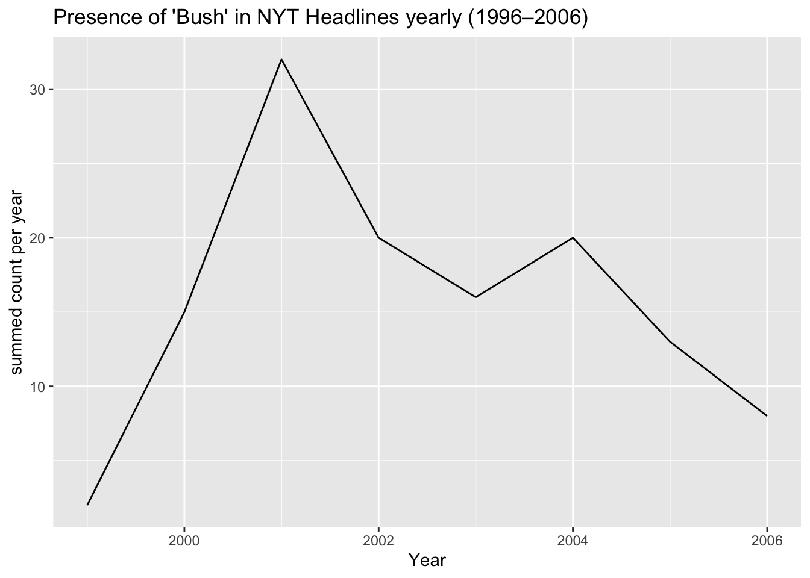
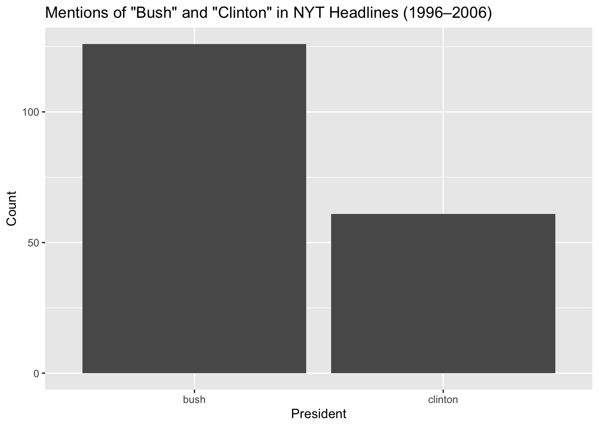
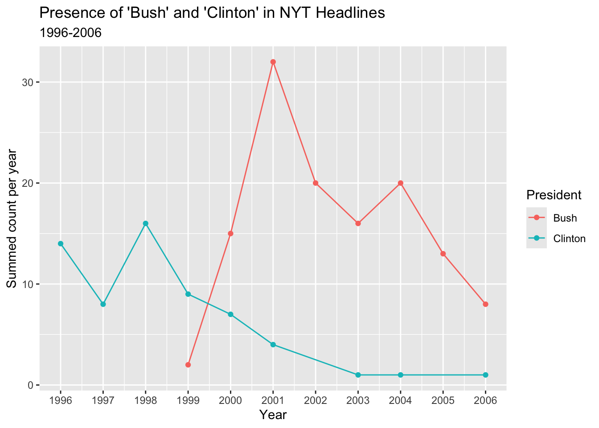

Today, I will be practicing my text analysis using str_*() commands, regular expressions, and plotting character-based data! To do this, I will be analyzing character data from all of The New York Times’ headlines from years 1996-2006.
The Data
The data is sample dataset containing headlines from The New York Times, compiled by Professor Amber E. Boydstun at the University of California, Davis. The dataset can be accessed in the RTextTools library on R from the RTextTools package. The data is in the library in a data frame called NYTimes.
# A tibble: 3,104 × 5
Article_ID Date Title Subject Topic.Code
<int> <fct> <fct> <fct> <int>
1 41246 1-Jan-96 Nation's Smaller Jails Struggle To C… Jails … 12
2 41257 2-Jan-96 FEDERAL IMPASSE SADDLING STATES WITH… Federa… 20
3 41268 3-Jan-96 Long, Costly Prelude Does Little To … Conten… 20
4 41279 4-Jan-96 Top Leader of the Bosnian Serbs Now … Bosnia… 19
5 41290 5-Jan-96 BATTLE OVER THE BUDGET: THE OVERVIEW… Battle… 1
6 41302 7-Jan-96 South African Democracy Stumbles on … politi… 19
7 41314 8-Jan-96 Among Economists, Little Fear on Def… econom… 1
8 41333 10-Jan-96 BATTLE OVER THE BUDGET: THE OVERVIEW… budget… 1
9 41344 11-Jan-96 High Court Is Cool To Census Change census… 20
10 41355 12-Jan-96 TURMOIL AT BARNEYS: THE DIFFICULTIES… barney… 15
# ℹ 3,094 more rows
First, I know that President Bush was a hot topic during these years.
Let’s see the distribution of this over the years included in this dataset. I also want to exclude the mention of bush fires, which also took place and may have been talked about on NYT often, so I will reflect that in my regular expression using a negative look-forward!
ggplot(bush_mentioned, aes(x = year, y = n)) +geom_line() +labs(title ="Presence of 'Bush' in NYT Headlines yearly (1996–2006)",x ="Year",y ="summed count per year" )

There was a peak in the mentions of “Bush” in the year 2001. This makes sense due to his inauguration as President of the United States and the September 11th both taking place that year.
On the topic of presidents, let’s quantify how much different presidents were talked about in the New York Times across the time frame represented by this data. I will use another regular expression to find the words “Bush”, “Clinton”, and “Obama”, excluding the search for “bush fire”, mentions of “Hillary Clinton”, and “Michelle Obama”, as for this analysis I am only looking for information on the presidents. To do this, I will make use of a couple of lookarounds, which are proving to be quite useful for specifying data!
president_names |>ggplot(aes(x = president, y = count)) +geom_col()+labs(title ='Mentions of "Bush" and "Clinton" in NYT Headlines (1996–2006)',x ="President",y ="Count" )

So, Bush was mentioned more than Clinton in this dataset from the years 1996 to 2006. Both were mentioned more than Obama, with 0 mentions.This makes sense as Obama only started running for election in 2007, right after this dataset ends. However, it is a bit surprising that he wasn’t mentioned at all prior to the year before his election. Curious!
Finally, I am interested to see how the timing of the mentions of each of these presidents compares and if I can pull out historical dates from the peaks in the following plot.
presidents_mentioned <- NYTimes |>mutate(Title_lower =str_to_lower(Title)) |>mutate(date =dmy(Date)) |>mutate(year =year(date)) |>filter(str_detect(Title_lower, "\\b(bush(?!\\s*fires?)|clinton)\\b")) |>mutate(president =ifelse(str_detect(Title_lower, "\\bbush(?!\\s*fires?)\\b"),"Bush", "Clinton")) |>group_by(year, president) |>summarize(n =n(), .groups ="drop")ggplot(presidents_mentioned, aes(x = year, y = n, color = president)) +geom_line() +geom_point()+scale_x_continuous(breaks =seq(1996, 2006, by =1)) +labs(title ="Presence of 'Bush' and 'Clinton' in NYT Headlines",subtitle="1996-2006",x ="Year",y ="Summed count per year",color ="President" )

We can see that the mentions of “Clinton” peak in 1998, when he was impeached. Mentions of “Bush” begin rising shortly after, with this pattern starting to get mentioned in 1999, when his campaign for presidential election was occuring and leading to his victory in 2000. Bush was inaugurated in 2001 and that year is also when the September 11th attacks took place, so mentions of Bush were extremely high that year. There is another peak in 2004 in “Bush” mentions again, given his re-election as president.
We can use text data to see how much different topics are being talked about in the media, which is a very important thing to know, and it can be useful to identify specific periods of interest.